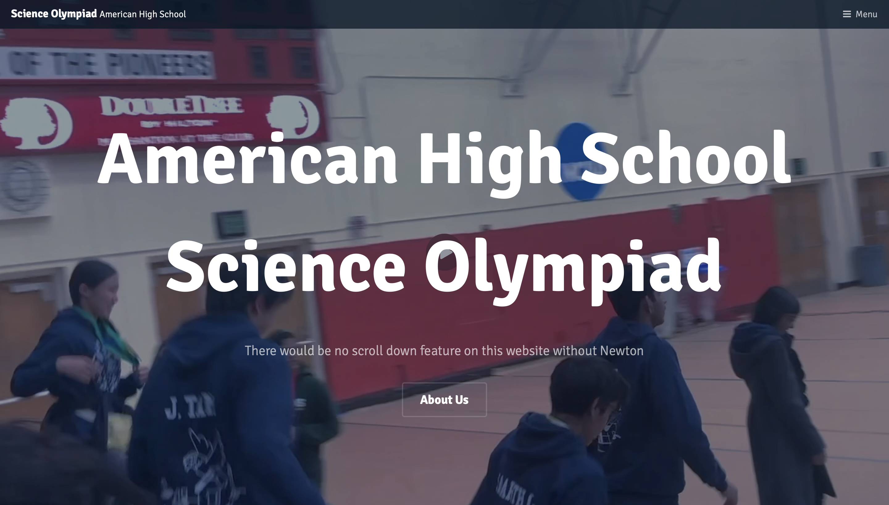
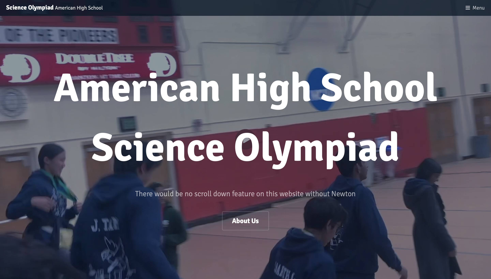

Projects
Here are my projects, in chronological order.
HackMIT 2023 - Reflexion Buddy
Originally, our team wanted to create an AI health assistant that would provide text to speech and speech to text functionality to make it more accessible, but since we were unable to find suitable medical datasets, we instead made an AI-augmented journaling website. It can take typed and spoken input, then generated and image and a few responses for further reflection.
Porta-Hooty
A for-fun project, I made this as a birthday gift for my younger sister. I used CAD to model the 3D printed housing and created the stuffed Hooty inside.
Code4Good United Planet Volunteer Page

United Planet needed a more streamlined way to onboard volunteers and ensure they complete the forms needed, so we made a dashboard for them. I worked on the frontend and API calls, which used Bootstrap, ReactJS, and axios.
dPV work
Benchmarked dPV (Python library for simulating solar cells) against TiberCAD and SCAPS to identify issues in dPV's simulation and functionality.
6.A01 Projects
In this class, I built increasingly complex versions of Simon Says, a brushless motor, and a generator using an Arduino board.
Principles of Engineering Projects
In this class, I learned about the engineering process and gained a broad overview of many areas of the field. Through projects, I got to put this learning into practice.
We made a Rube Goldberg machine that puts a pencil into a pencil sharpener.
We designed and tested an insulating lid for our thermodynamics unit.
For our final project, I designed and built a hydrogen fuel cell powered boat with my team. This project involved applying the physics knowledge I already knew and learning digital fabrication, namely 3D printing and laser cutting.


Bird-ID Discord Bot
In the 2020-2022 Science Olympiad cycles, the event Ornithology had a cult following. Because there were no good ways to practice identifying birds at the time, a friend and I made Bird-ID Bot as a fun way to help student study for Ornithology. It has been used by over 1000 users and has been adapted into other ID event bots (Fossils, Rocks and Minerals), although I was not involved with the expansion.
Science Olympiad
A variety of knicknacks I made for Science Olympiad. 2 glockenspiels and a home page for our Science Olympiad team.
 
